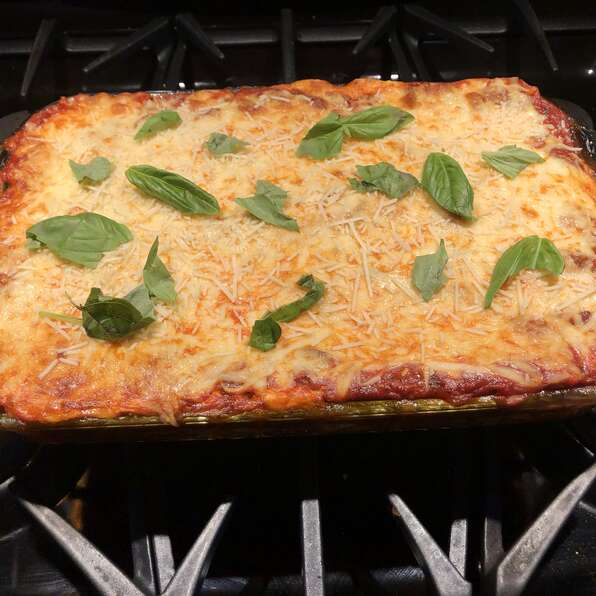

<!DOCTYPE html>
<html lang="en">
</html>
<html>
    <head>
       <title>Hearty Vegetable Lasagna</title>
       <meta charset="utf-8"/>
       <link rel="stylesheet" href="style2.css">
    </head>
    <body>
        <h1>Hearty Vegetable Lasagna</h1>
        
        <h3>"This hearty, vegetable lasagna is the only lasagna my husband will eat. 
             <br> We love it!!! Hope you all enjoy as much as we do."</h3>
        <p><em>By Anonyme</em></p>
        <br>
        <h3>Ingredients for 12 servings</h3>
        <ul>
            <li>1 (16 ounce) package lasagna noodles</li>
            <li>1 pound fresh mushrooms, sliced</li>
            <li>¾ cup chopped green bell pepper</li>
            <li>¾ cup chopped onion</li>
            <li>3 cloves garlic, minced</li>
            <li>2 tablespoons vegetable oil</li>
            <li>2 (26 ounce) jars pasta sauce</li>
            <li>1 teaspoon dried basil</li>
            <li>1 (15 ounce) container part-skim ricotta cheese</li>
            <li>4 cups shredded mozzarella cheese</li>
            <li>2 eggs</li>
            <li>½ cup grated Parmesan cheese</li>
        </ul>
        <br>
   <h3>Steps</h3>
       <ol>
           <li>Cook the lasagna noodles in a large pot of boiling water for 10 minutes, or
                 <br> until al dente. Rinse with cold water, and drain.</li>
           <li>In a large saucepan, cook and stir mushrooms, green peppers, onion, and 
                 <br> garlic in oil. Stir in pasta sauce and basil; bring to a boil. Reduce heat, and 
                 <br> simmer 15 minutes.</li>
            <li>Mix together ricotta, 2 cups mozzarella cheese, and eggs.</li>
            <li>Preheat oven to 350 degrees F (175 degrees C). Spread 1 cup 
                  <br> tomato sauce into the bottom of a greased 9x13 inch baking dish. Layer 1/2 each, 
                  <br> lasagna noodles, ricotta mix, sauce, and Parmesan cheese. Repeat 
                  <br> layering, and top with remaining 2 cups mozzarella cheese.</li>
            <li>Bake, uncovered, for 40 minutes. Let stand 15 minutes before serving.</li>
        </ol>
    </body>
</html>
